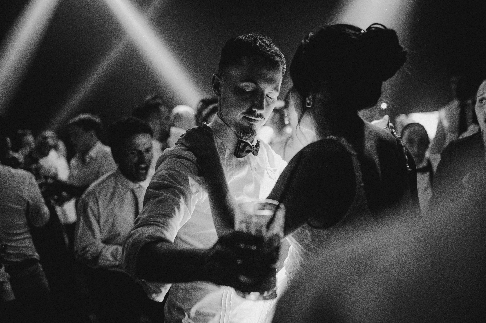
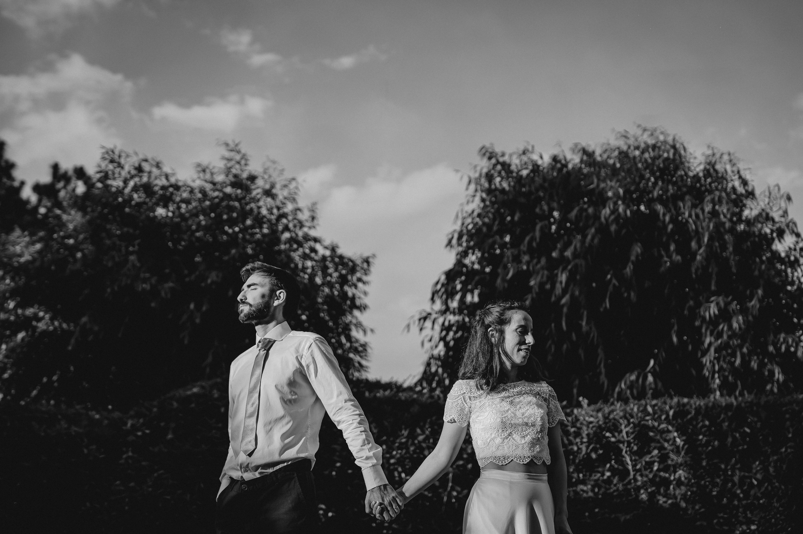

Gracias por llegar hasta acá, e interesarse en mi mirada particular para las fotos y video de su boda! Mi propuesta consiste en un registro espontáneo y fresco de su boda, sin poses ni fotos muy estructuradas; de manera que puedan dedicarse a disfrutar juntos y con sus seres queridos.
Me encanta contar historias en fotos, y la suya sin lugar a dudas será única y distinta a las demás; por eso se merecen fotos igualmente únicas. Les prometo que daré lo mejor de mí para registrar ese día y entregarles un recuerdo especial, para toda la vida. La idea es que cuando vean su libro de boda se sorprendan y vuelvan a emocionarse al revivir cada momento.
La confianza es imprescindible entre ustedes y su fotógrafo. Desde los preparativos hasta que termina la fiesta los acompañaré y estaré concentrado en registrar los momentos que duran segundos, las emociones tanto de ustedes como de sus familiares y amigos.
También habrá un poco de experimento… ¿por qué no? No quiero hacer fotos para la tapa de una revista de bodas… La fotografía es un arte y juntos estaremos creando un legado visual único, que quedará para su futuro, para los que vengan después. Si son de las parejas que les encanta romper los esquemas, se arriesgan a tener una boda diferente, única; novias que no quieren ser princesas, novios que no tienen vergüenza de expresar sus emociones, juntos nos vamos a divertir, emocionar y a crear una memoria especial en imágenes.